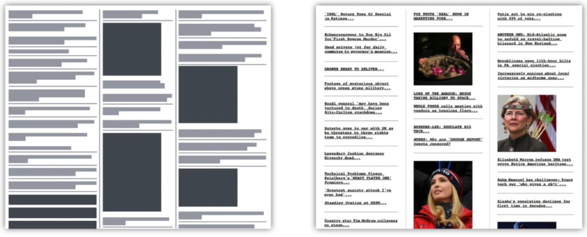
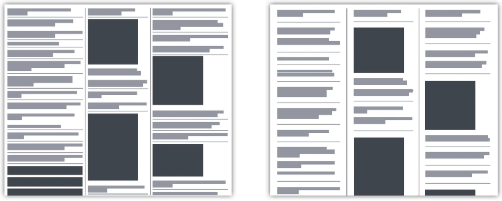
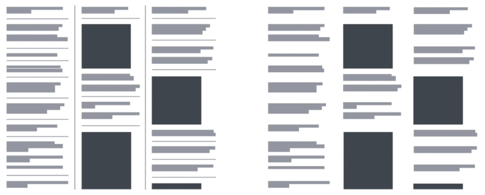
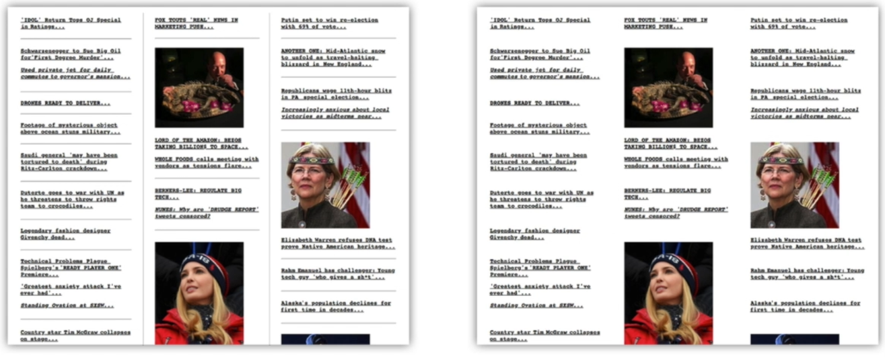
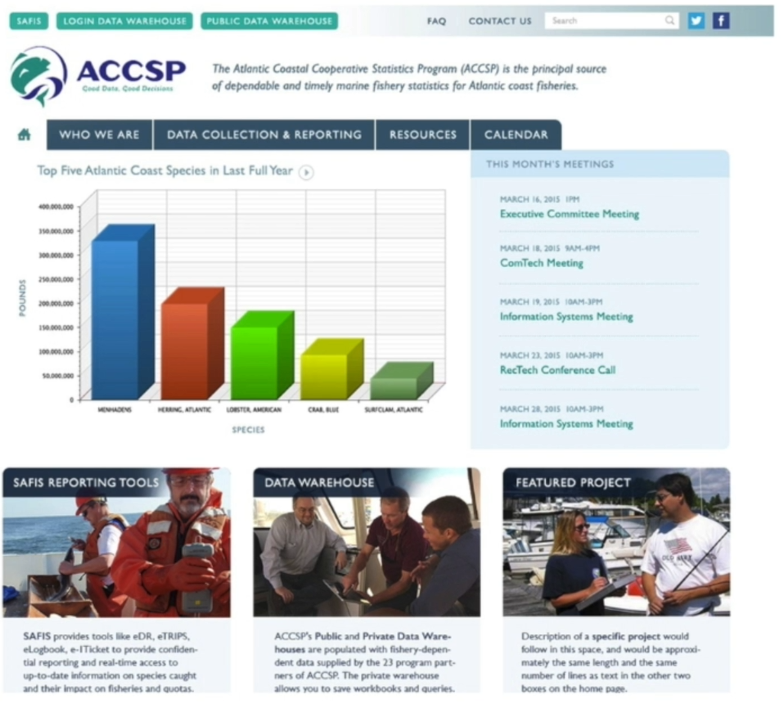
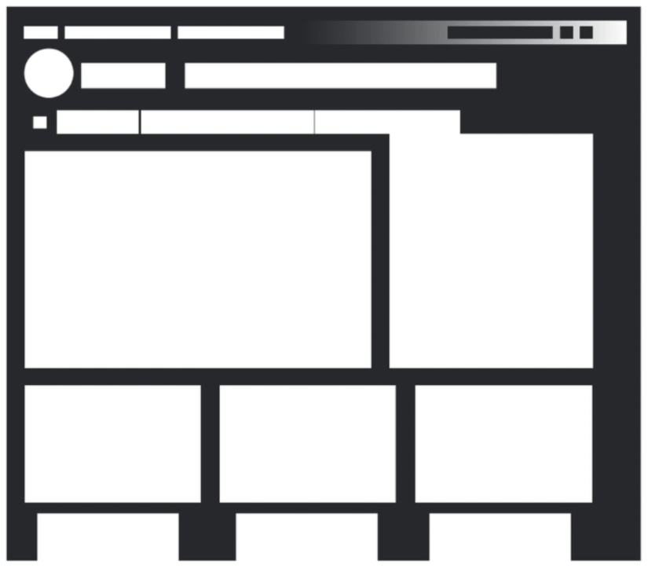
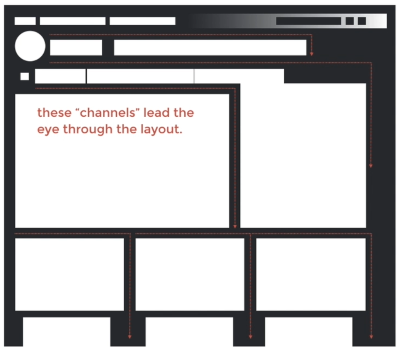

Jump to a section
10 · Case Studies - Improving Balance in the User Interface
Refined 15 October 2026 from the supplied Joe Natoli course notes. Original wording and captures remain preserved.
Core principle
Targeted changes to column widths, gutters and padding can clarify an existing interface.
Application to game tools
Improve one crowded tool group before proposing a complete visual redesign.
Assessment and qualification
The captured before/after is a design demonstration, not a measured user-study result.
Try it
Can a new user correctly group the same controls after the change?
Source: 10 Case Studies - Improving Balance in the User Interface.md
Study detail and teaching translation
Inspect the existing structure before redesigning it: unequal gutters, cramped margins and weak separation can make otherwise sensible groups difficult to read.
Change a small set of relationships, then compare the result using the same content. This makes the reason for the improvement easier to explain.
Teaching adaptation: use matched material-preview captures. Distinguish a design demonstration from a measured claim about faster task completion.
Original captures







